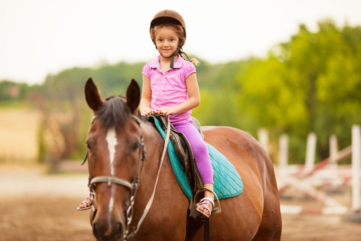
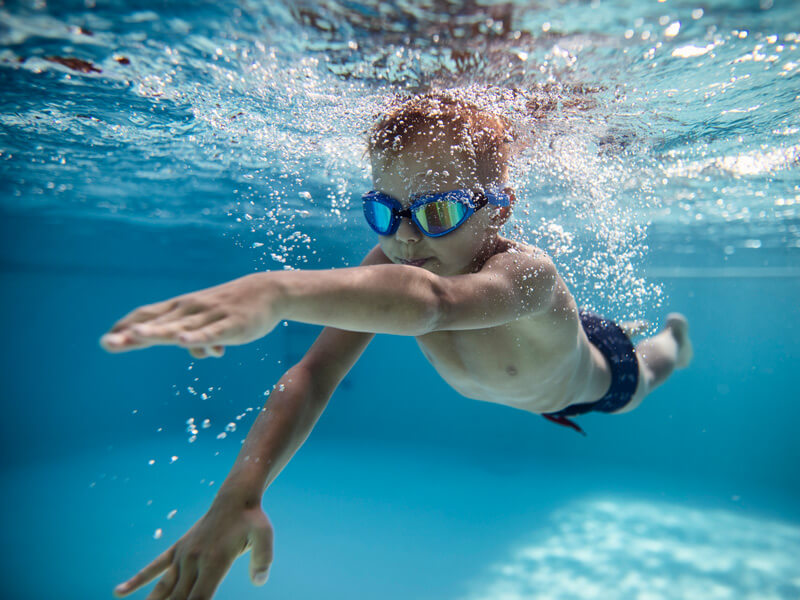
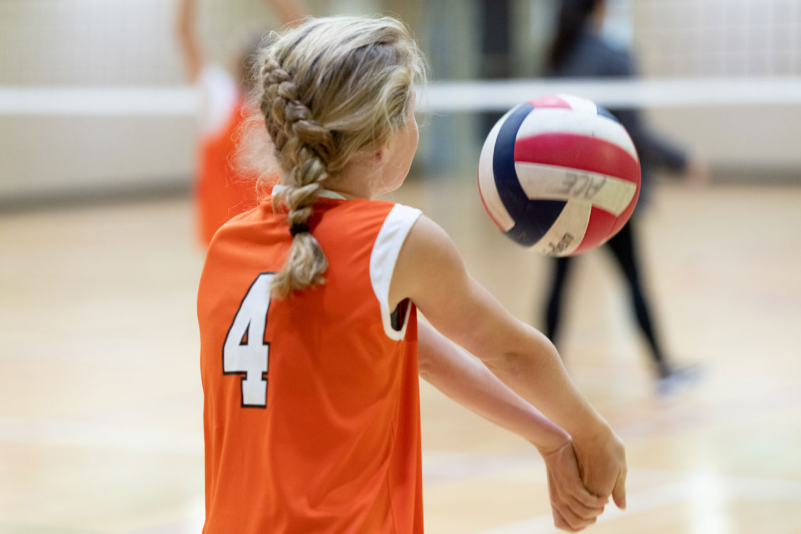
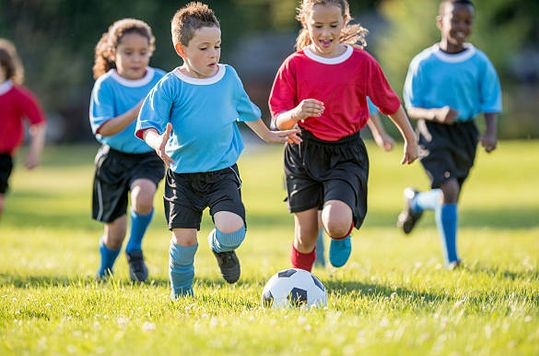
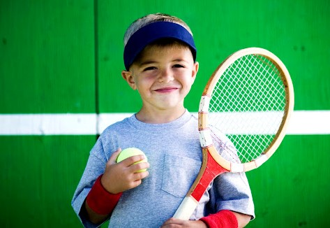
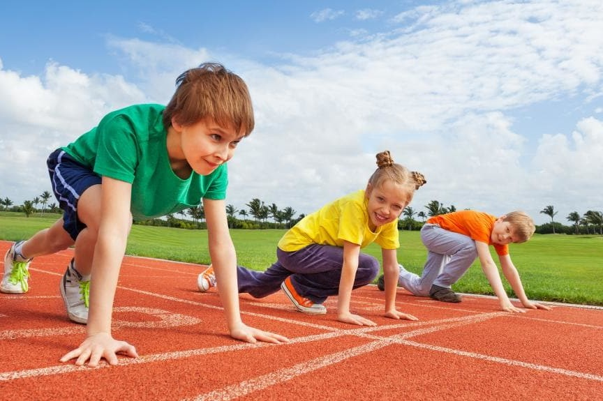

Какво предлагаме?
Нашият спортен клуб предлага на Вас и вашите деца да се впуснат в магията на спорта като изпробват едни от най-популярните и харесвани спортове сред децата. Докато вашето дете е на тренирока, вие може да се насладите на чаша кафе или вино от нашият бар.
Видове спорт
-

Конна езда
Конната езда е много подходящ спорт за всяко едно дете, което обича животните и има нужда да подобри баланса си.
-

Плуване
Плуването е чудесен спорт, който осигурява нужното развитие на детето и предовратява гръбначно изкривяване.
-

Волейбол
Волейболът е спорт, който намалява стреса и умората, а благодарение на тренировките с тежести се укрепват костите.
-

Футбол
Футболът подобрява издръжливостта и е чудесен спорт за деца, които искат да бъдат част от отбор с обща мисия.
-

Тенис
Тенисът е спорт, който освен да подобри издръжливостта на децата ги кара да мислят предварително и да определят бъдещите ходове на опонента си.
-

Лека атлетика
Този спорт успешно се бори с един от най-често срещаните болести при децата: затълстяването и заедно с това увеличава мускулната активност.